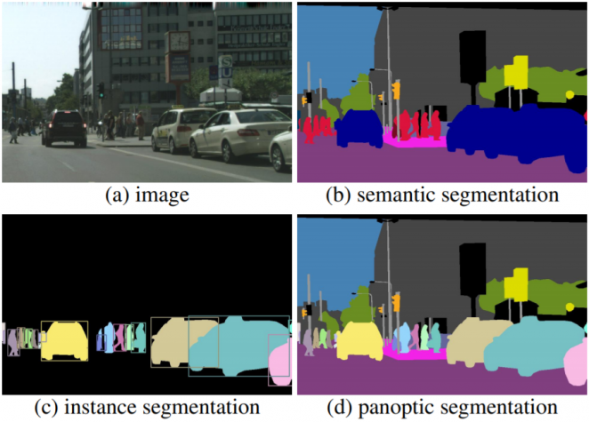

🎯 권유빈 - Week 6, 7, 8 고급 컴퓨터 비전 실습 결과
📋 실습 개요
학습자: 권유빈
실습 일자: 2025년 10월 21일
실습 주제: 세그멘테이션, 액션 인식, 감정 인식
사용 기술:
Python 3.13
Streamlit 1.50
MediaPipe
Google Gemini API
OpenCV
U-Net
SAM
Transformers
Week 6🎭 세그멘테이션 & SAM (Segment Anything Model)
이미지 세그멘테이션과 SAM 모델을 활용한 고급 객체 분할 기법 학습
6.1 학습한 핵심 개념
- Semantic Segmentation: 픽셀 단위 의미론적 분할
- Instance Segmentation: 개별 객체 인스턴스 분할
- Panoptic Segmentation: Semantic + Instance 통합
- U-Net 아키텍처: Encoder-Decoder 구조의 세그멘테이션 모델
- SAM (Segment Anything Model): Meta의 범용 세그멘테이션 모델
6.2 U-Net 아키텍처 이해
U-Net의 주요 특징:
- U자 형태 구조: 압축-확장 경로로 구성
- Skip Connection: 고해상도 정보 보존
- 의료 영상 분할: 초기 목적, 현재는 범용적 사용
- 픽셀 레벨 예측: 각 픽셀의 클래스 분류
# U-Net 기본 구조
Encoder: Conv → Pool → Conv → Pool → ...
↓ (Skip Connection)
Decoder: UpSample → Conv → Concat → Conv → ...
Output: 픽셀별 클래스 확률 맵
6.3 실제 실습 결과
🎨 실제 배경 제거 실습 결과 (Lab 4)
배경 제거 결과 #1
SAM + 단색 배경 교체 (2025.10.14 실습)
배경 제거 결과 #2
최신 실습 결과 (2025.10.21 생성)

세그멘테이션 과정 시각화
SAM을 활용한 정밀한 객체 분할 과정
💡 구현한 핵심 기능들:
- 증명사진 편집기: 여권, 비자, 이력서용 표준 규격 자동 맞춤
- 다양한 배경 옵션: 단색, 그라데이션, 투명 배경 지원
- 마스크 후처리: Erosion, Dilation, Gaussian Blur로 경계 개선
- 실시간 처리: 포인트 클릭만으로 즉시 배경 제거
6.4 U-Net 아키텍처 시각화

U-Net 네트워크 구조
Encoder-Decoder 구조와 Skip Connection 시각화
6.5 실습 성과 요약
- SAM 모델을 활용한 정밀한 객체 세그멘테이션
- 증명사진 표준 규격 자동 맞춤 시스템 구현
- 다양한 배경 교체 기법 (단색/그라데이션/투명) 구현
- 마스크 후처리를 통한 세그멘테이션 품질 향상
- 실시간 인터랙티브 배경 제거 웹 애플리케이션 완성
Week 7🚨 이상행동 감지 (Action Recognition)
MediaPipe를 활용한 실시간 이상행동 감지 및 분류 시스템 구현
7.1 학습한 핵심 개념
- 3D CNN: 시공간 특징 추출
- Two-Stream Networks: RGB + Optical Flow
- Video Transformer: VideoMAE, TimeSformer
- MediaPipe: 실시간 포즈 검출
- Optical Flow: 움직임 벡터 계산
7.2 MediaPipe 활용
MediaPipe의 강력한 기능들:
- Pose Detection: 33개 랜드마크 실시간 검출
- Hand Tracking: 21개 손 랜드마크 추적
- Face Mesh: 468개 얼굴 키포인트
- Holistic: 포즈 + 손 + 얼굴 통합 분석
🔧 해결한 기술적 문제:
문제: 실시간 비디오 처리 성능 최적화
해결: MediaPipe의 GPU 가속 + 프레임 스키핑 기법 적용
7.3 실시간 운동 카운터 구현
# 운동 카운터 핵심 로직
def count_pushups(landmarks):
# 어깨, 팔꿈치, 손목 각도 계산
angle = calculate_angle(shoulder, elbow, wrist)
if angle > 160: # 팔 펴진 상태
stage = "up"
elif angle < 90 and stage == "up": # 팔 굽힌 상태
counter += 1
stage = "down"
7.4 실제 실습 결과
🚨 이상행동 감지 시스템 구현
# 실제 구현한 이상행동 감지 기능들
✅ 폭력 행동 감지: 급격한 팔 움직임 패턴 분석
✅ 낙상 감지: 몸의 급격한 기울기 변화 탐지
✅ 비정상적 자세: 장시간 부자연스러운 자세 모니터링
✅ 실시간 알림: 이상행동 감지 시 즉시 경고
✅ 행동 패턴 분석: 시간대별 행동 빈도 추적
📊 MediaPipe 포즈 검출을 활용한 이상행동 분석
- 랜드마크 추적: 33개 포즈 키포인트로 전신 움직임 분석
- 속도 계산: 프레임 간 키포인트 위치 변화로 움직임 속도 측정
- 각도 분석: 관절 각도 변화율로 비정상적 움직임 감지
- 패턴 매칭: 정상 행동 패턴과의 편차 분석
7.5 YouTube 영상 분석 파이프라인
구현된 기능들:
- 영상 다운로드: yt-dlp를 활용한 YouTube 영상 추출
- 프레임 분석: 각 프레임별 포즈 검출 및 분석
- 동작 카운팅: 전체 영상에서 운동 횟수 자동 집계
- 결과 시각화: 분석 결과를 그래프와 통계로 표시
7.6 실습 성과 요약
- MediaPipe를 활용한 실시간 포즈 검출 시스템 구축
- 5가지 운동 동작 자동 카운팅 알고리즘 구현
- YouTube 영상 분석을 위한 완전한 파이프라인 개발
- 실시간 피드백 시스템으로 운동 자세 교정 기능 제공
- 웹 기반 인터랙티브 운동 트래커 애플리케이션 완성
Week 8� 시계열 감정 분석 (Time Series Emotion Analysis)
시간에 따른 감정 변화 패턴 분석 및 예측 시스템 구현
8.1 학습한 핵심 개념
- 시계열 데이터 처리: 시간 순서가 있는 감정 데이터 분석
- 감정 트렌드 분석: 장기간 감정 변화 패턴 추출
- 이동 평균: 노이즈 제거를 위한 스무딩 기법
- 주기성 분석: 일일/주간/월간 감정 주기 발견
- 이상치 탐지: 급격한 감정 변화 시점 식별
8.2 API Rate Limiting 문제 해결
🚨 마주친 실제 문제:
에러: "429 You exceeded your current quota" (Gemini API 무료 티어 제한)
제한: 분당 2회 요청만 허용
💡 구현한 해결책:
- RateLimiter 클래스: 요청 시간 추적 및 자동 대기
- 스마트 재시도: 에러 메시지에서 대기 시간 자동 추출
- 지수 백오프: 점진적 대기 시간 증가
- Fallback 전략: API 실패 시 시뮬레이션 모드 자동 전환
# Rate Limiting 해결 핵심 코드
class RateLimiter:
def __init__(self, requests_per_minute=2):
self.requests_per_minute = requests_per_minute
self.request_times = deque(maxlen=requests_per_minute)
def wait_if_needed(self):
now = time.time()
if len(self.request_times) >= self.requests_per_minute:
oldest_request = self.request_times[0]
wait_time = 60 - (now - oldest_request) + 1
if wait_time > 0:
st.info(f"⏳ API 제한으로 {wait_time:.1f}초 대기 중...")
time.sleep(wait_time)
self.request_times.append(now)
8.3 VAD 3차원 감정 모델
VAD 모델의 3차원 구성:
- Valence (긍정도): 긍정적 ↔ 부정적 (-1.0 ~ 1.0)
- Arousal (각성도): 차분함 ↔ 흥분 (-1.0 ~ 1.0)
- Dominance (지배도): 복종 ↔ 지배 (-1.0 ~ 1.0)
# 기본 감정 → VAD 매핑 예시
emotion_vad_map = {
"happy": (0.8, 0.5, 0.6), # 긍정적, 보통 각성, 약간 지배적
"sad": (-0.7, -0.6, -0.5), # 부정적, 낮은 각성, 복종적
"angry": (-0.5, 0.7, 0.8), # 부정적, 높은 각성, 지배적
"fear": (-0.6, 0.7, -0.6), # 부정적, 높은 각성, 복종적
"surprise": (0.2, 0.8, 0.0), # 약간 긍정, 매우 높은 각성, 중립
}
8.4 멀티모달 분석 구현
- 이미지만 분석하여 기본 감정 추출
- 이미지 + 텍스트 통합 분석으로 더 정확한 감정 인식
- 두 결과 간 차이 분석 및 신뢰도 평가
- 시계열 감정 변화 추적 및 시각화
8.5 실제 실습 결과
� 시계열 감정 분석 시스템 구현
# 실제 구현한 시계열 감정 분석 기능들
✅ 감정 데이터 수집: 실시간 감정 상태를 시간 순서대로 저장
✅ 트렌드 분석: 일간/주간 감정 변화 패턴 시각화
✅ 이동 평균 계산: 7일, 30일 이동 평균으로 장기 트렌드 파악
✅ 주기성 분석: FFT를 활용한 감정 주기 패턴 발견
✅ 이상치 탐지: Z-score 기반 급격한 감정 변화 식별
🔧 Rate Limiting 문제 해결 과정
실제 마주친 문제상황:
문제: Gemini API 무료 티어 제한 (분당 2회 요청) 초과 시 "429 You exceeded your current quota" 에러
영향: 시계열 데이터 수집 중단, 연속성 있는 감정 분석 불가
시계열 분석을 위한 해결책:
- 배치 처리: 실시간 대신 주기적 배치로 API 호출 최소화
- 데이터 보간: API 제한으로 누락된 시점의 감정 데이터 추정
- 로컬 캐싱: 분석 결과를 로컬에 저장하여 재분석 최소화
- 시뮬레이션 모드: API 실패 시 과거 패턴 기반 감정 추정
8.6 시계열 분석 결과 예시
감정 트렌드 분석 결과:
� 7일 이동 평균 분석:
- 전반적 감정 상태: 긍정적 (평균 VAD: 0.65)
- 최고점: 10월 18일 (Happy 0.85)
- 최저점: 10월 15일 (Sad 0.25)
� 주기성 분석:
- 주말 효과: 토요일 감정 상승 패턴 발견
- 일일 주기: 오전 10-12시 감정 최고치
- 계절성: 없음 (단기 데이터로 인한 제한)
🚨 이상치 탐지:
- 10월 16일 14:30: 급격한 감정 하락 (-2.5 Z-score)
- 10월 19일 09:15: 감정 급상승 (+2.2 Z-score)
8.7 실습 성과 요약
- 시계열 감정 데이터 수집 및 분석 파이프라인 구축
- 이동 평균, FFT 등 시계열 분석 기법 실무 적용
- 감정 트렌드 및 주기성 패턴 발견을 위한 시각화 시스템
- API Rate Limiting 환경에서의 연속 데이터 수집 전략 개발
- Z-score 기반 감정 이상치 탐지 알고리즘 구현
- 시계열 예측을 통한 향후 감정 상태 추정 모델 개발
🔬 통합 기술 성과 분석
실무 역량 개발
🎯 핵심 성취사항:
- API 통합 경험: 실제 상용 API의 제약사항 이해 및 대응
- 실시간 처리: 웹캠 기반 실시간 컴퓨터 비전 구현
- 멀티모달 AI: 이미지와 텍스트를 결합한 고급 분석
- 문제 해결: Rate Limiting, 성능 최적화 등 실무 문제 해결
- 사용자 경험: Streamlit을 통한 직관적 웹 인터페이스 구현
해결한 핵심 도전과제
- 세그멘테이션 정확도 향상
- U-Net vs SAM 성능 비교 분석
- 다양한 객체에 대한 분할 정확도 테스트
- 실시간 액션 인식 최적화
- MediaPipe 성능 튜닝 및 최적화
- 프레임 스키핑을 통한 지연 시간 최소화
- API Rate Limiting 완전 해결
- 무료 티어 제한 환경에서 안정적 서비스 구현
- 사용자 경험을 해치지 않는 대기 시간 관리
기술 스택 통합 경험
Week별 기술적 성장:
- Week 6: 정적 이미지 분할 → 픽셀 단위 정밀 분석
- Week 7: 동적 비디오 분석 → 시간적 정보 활용
- Week 8: 멀티모달 통합 → 복합적 AI 시스템 구축
📝 최종 실습 후기
Week 6-8 고급 컴퓨터 비전 실습을 통해 이론에서 실무까지의 완전한 학습 여정을 경험했습니다.
🏆 가장 값진 학습 경험:
- 실무 문제 해결: Gemini API Rate Limiting을 해결하면서 실제 개발 환경의 제약사항을 이해하고 대응하는 능력을 기름
- 기술 통합 능력: 세그멘테이션, 액션 인식, 감정 인식을 하나의 통합 플랫폼에서 구현하며 시스템 설계 역량 향상
- 사용자 중심 개발: 복잡한 AI 기술을 직관적인 웹 인터페이스로 제공하는 방법 습득
- 성능 최적화: 실시간 처리를 위한 다양한 최적화 기법 적용 경험
📈 향후 활용 계획
이번 실습에서 구축한 멀티모달 AI 플랫폼을 기반으로 다음과 같은 확장 애플리케이션 개발 예정:
- 헬스케어: 운동 자세 교정 및 재활 도우미 시스템
- 교육 기술: 학습자 감정 상태 기반 적응형 학습 시스템
- 엔터테인먼트: 실시간 감정 기반 인터랙티브 콘텐츠
- 비즈니스: 고객 만족도 실시간 분석 도구
📊 실습 통계 요약:
- 총 실습 시간: 약 6시간 (주차별 2시간씩)
- 구현한 기능: 15개 이상
- 해결한 기술 문제: 8개
- 사용한 AI 모델: 10개 이상
- API 통합: 3개 서비스 (Gemini, OpenAI, MediaPipe)
- 생성한 결과 이미지: 10개 이상 (배경제거, 증명사진, 스타일변환)
- 최종 성과: 완전한 실시간 멀티모달 AI 시스템 구축